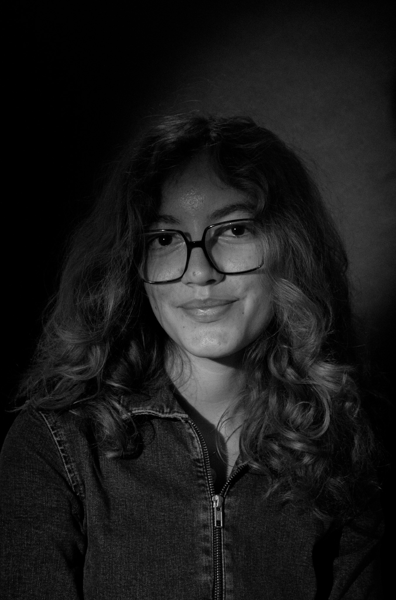
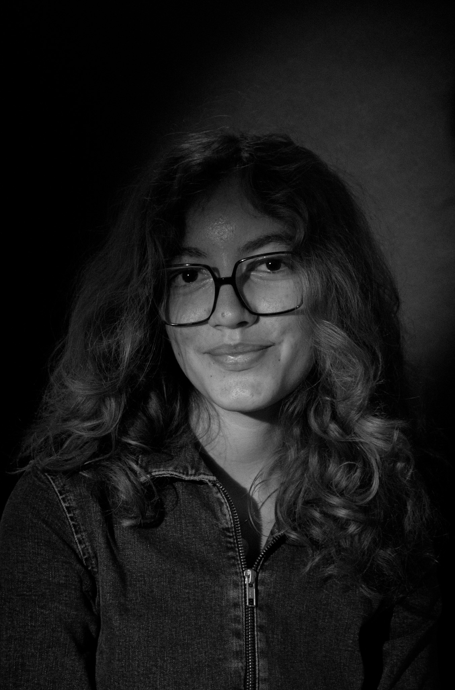
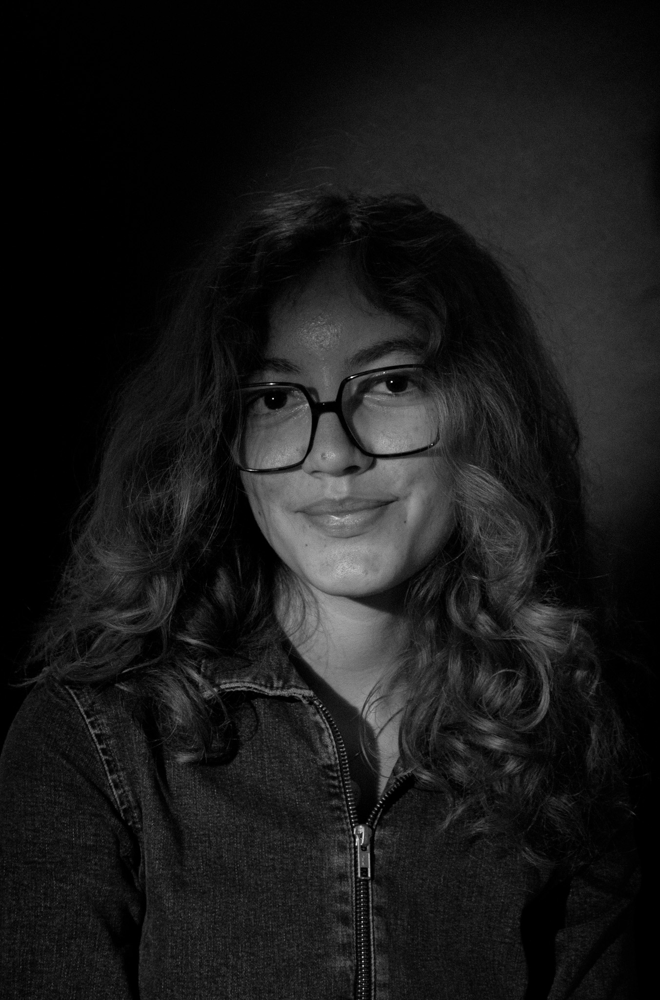

La pratique du portrait en noir et blanc incarne une approche intemporelle de la photographie.Sans la distraction des couleurs, chaque ombre et lumière raconte une histoire, créant une connexion intime entre le spectateur et le sujet. Ce minimalisme révèle la force et la vulnérabilité humaines, tout en valorisant l’universalité des émotions.
The practice of black and white portrait photography embodies a timeless approach of the art. Without the distraction of color, every shadow and light tells a story, creating an intimate connection between the viewer and the subject. This minimalism reveals both the strength and vulnerability of the human condition, while emphasizing the universality of emotions.
Avril 2024 - Projet Personel.
